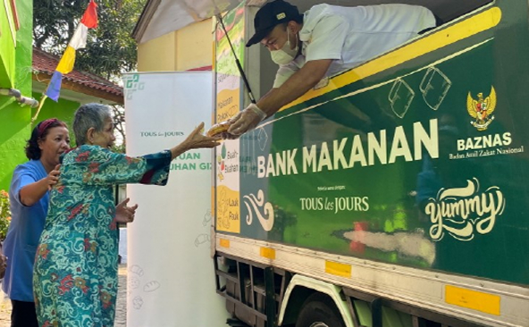
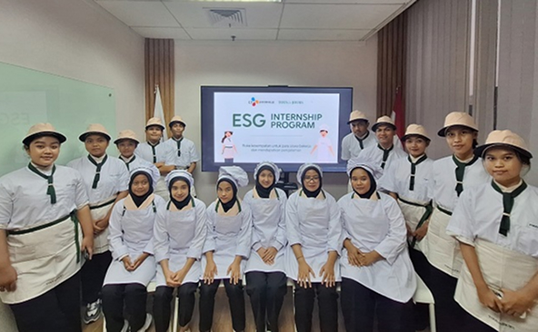
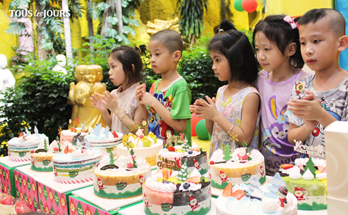
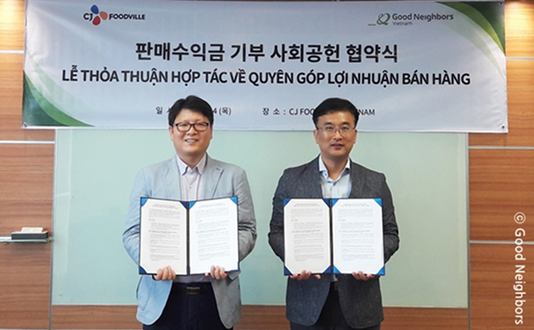

상생경영
keyboard_arrow_downCJ푸드빌은 글로벌 외식문화 기업으로서의
사회적 책임을 다하고자 노력하고 있습니다.
지역사회 상생
CJ푸드빌은 F&B 業(업) 특성과 연계한
사회공헌 활동을 통해
지속가능한 동반성장 가치를
창출하고 지역사회 발전에 기여하고자 합니다.
-
충청남도·당진시·예산군
상생 발전 위한 4자 업무 협약(MOU) 체결CJ푸드빌은 지역 농가와의 상생활동을 이어나가며 ESG 경영을 적극 실천하고 있습니다.
지난 2022년 경상남도 남해군을 시작으로 2023년 전라남도 완도군, 장성군에 이어 2024년에는 충청남도와의 업무협약을 토대로 지역사회 협력을 강화했습니다.CJ푸드빌은 이번 협약을 통해 당진시의 수산물인 새우, 예산군의 특산물인 쪽파 등 충청남도의 고품질 식재료를 수급 받아 뚜레쥬르, 빕스, 무교주가 등 베이커리 & 외식브랜드에서 식재료 특장점을 살린 신메뉴를 선보였습니다.
당진시, 예산군과 CJ푸드빌 임직원이 만나는 자리도 잇달아 가졌습니다. 김찬호 대표이사를 비롯한 임직원 20여명은 예산군을 찾아 쪽파 수확 체험 및 농가 격려 행사를 진행했습니다. 충청남도 당진시와 함께한 '지역 상생 협력 프로젝트 성과 공유회' 에서는 지역 상생 프로젝트 주요 성과를 공유하고 당진 새우를 활용한 CJ푸드빌 메뉴 소개 및 시식 행사를 성공리에 마쳤습니다. -
전라남도·완도군·장성군
외식상품 개발·홍보 MOU 체결CJ푸드빌은 농가소득 제고와 지역사회 소비 활성화를 위해 전라남도,완도군,장성군과 전남 농수산물을 활용한 외식상품ㆍ개발 홍보 업무협약을 체결했습니다.
이번 협약을 통해 CJ푸드빌은 완도군 전복과 비파, 장성군의 사과와 산나물 등 지역 특산물을 수급 받아 빕스, 더플레이스 등 외식 브랜드에서 파스타, 샐러드 등 신메뉴를 출시하고 레스토랑 간편식(RMR)을 선보였습니다.
장성군 특산물의 우수함을 알리기 위한 '지역상생 협력 갈라디너 행사'도 개최해 농가상생 우수사례로 주목받았습니다. N서울타워 '한쿡'에서 열린 갈라디너는 사찰음식 명장 백양사 정관스님이 요리를 맡았으며 장성군 사과, 토종 감, 복분자, 토란 등 40여 가지 식재료를 활용한 정찬을 제공해 남도 음식의 우수성을 알리는 계기가 되었습니다. -
경상남도 남해군
상생발전 MOU 체결CJ푸드빌은 남해군 특산물을 이용한 제품 개발ㆍ판매 및 남해군 홍보를 위해 경상남도 남해군과 상생발전을 위한 업무협약을 체결했습니다.
해풍을 맞으며 자라 알싸한 맛이 특징인 남해 마늘을 넣은 뚜레쥬르 신제품은 출시와 함께 큰 인기를 얻었습니다. CJ푸드빌 남해 마늘 빵은 미국 뚜레쥬르에도 진출해 국내 지역 특산물의 높은 품질을 해외에 알렸습니다.
이번 협약으로 남해군 마늘 농가는 안정적인 판로를 확보해 출하량을 늘릴 수 있고, CJ푸드빌은 연구개발(R&D) 역량을 투입해 맛 좋은 빵을 국내와 글로벌 시장에 선보일 수 있어 성공적인 윈윈(Win-Win) 모델로 평가받고 있습니다.
글로벌 사회공헌
CJ푸드빌은 CJ그룹 창업 이념인 사업보국 정신을 글로벌로
확대하고 현지에 맞는 사회공헌 프로그램 운영을 통해
글로벌 외식문화기업의 책임을 다하고 있습니다.
인도네시아
-
 무슬림 기부기관 '바즈나스' 맞손
현지 베이커리 업계 최초 기부 활동CCJ푸드빌은 인도네시아 최대 무슬림 기부 기관 바즈나스(BAZNAS)와 취약계층에 대한 제품 기부에 관한 업무협약을 체결했습니다.
바즈나스는 현지 무슬림이 가장 신뢰하는 기부 기관입니다. 인도네시아 뚜레쥬르는 현지 베이커리 업계 최초로 바즈나스를 통한 기부활동을 전개했으며, 2023년 한해 20만 개 이상의 뚜레쥬르 빵을 무슬림 취약계층에 지원했습니다.
뚜레쥬르 디자인으로 래핑된 차량이 연중 인도네시아 여러 동네를 순회하며 빵을 직접 전달하는 'Car Donation' 방식을 통해 취약계층 밀집 거주 지역에 따뜻한 온기를 전달하고 있습니다. -
 영속적인 기술역량 이전 추구
'뚜레쥬르 베이킹 드림스' 운영2022년 6월 CJ푸드빌은 인도네시아 자카르타에 위치한 SMKN27 국공립학교와 MOU를 통해 '뚜레쥬르 베이킹 드림스(TLJ Baking Dreams)' 아카데미 프로그램을 신설하고, 제과제빵 학과 교사에게 고급 제과제빵 기술을 전수하여 영속적인 기술역량 이전에 집중하고 있습니다.
CJ푸드빌은 2014년 한국국제협력단(KOICA)과 손잡고 글로벌 사회 공헌 프로그램인 '한·인니 CJ제과제빵학과'를 개설했으며, 기존 제빵 관련 학과 교육 과정 및 시설을 개선·확충해 전문 기술인력을 양성하고 고용창출에 기여하는 활동 또한 지속해오고 있습니다.
베트남
-
 현지 취약계층 관심과 나눔 확대
호치민·하노이 양로원, 보육시설 방문CJ푸드빌은 2020년부터 코로나 바이러스 대유행으로 어려움을 겪고 있는 아동들이 행복한 크리스마스 연말을 보낼 수 있도록 임직원들이 호지민·하노이 지역 보육 시설을 방문해 뚜레쥬르 제품으로 구성된 선물을 전달하고 있습니다.
이후 팬데믹이 계속되자, 취약계층에 대한 관심과 나눔을 아동 뿐 아니라 노인층까지 확대하기로 결정하고 호치민과 하노이를 중심으로 30여 곳의 양로원 및 보육시설을 누적 방문하며 상생경영을 실천 중입니다. -
 굿네이버스와 지역사회 성장 지원
제휴 제품 통한 판매수익 기부 선순환CJ푸드빌은 글로벌 아동권리 전문 NGO 굿네이버스와 손을 잡고 베트남 아이들의 건강한 성장을 지원하는 활동을 꾸준히 이어오고 있습니다.
베트남 뚜레쥬르는 굿네이버스 제휴 제품을 선정해 해당 제품 판매수익 일부를 굿네이버스에 기부하고 있습니다. 일상적인 빵 구매가 현지 지역사회를 위한 기부로 이어지는 선순환 고리를 만든 것입니다.
굿네이버스는 기부 금액 일부를 생활이 어려운 가정에 생필품과 학비를 지원하는데 사용합니다. 이를 통해 가정 경제 자립 뿐 아니라 아이들이 학습을 계속할 수 있도록 도움을 주고 있습니다.